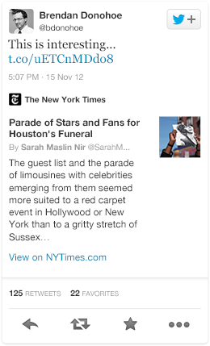
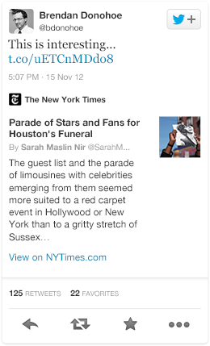
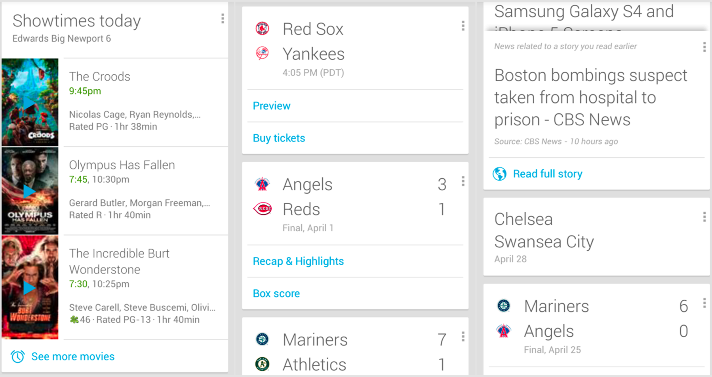

Designing Cards for Everyone
Kawandeep Virdee, Embedly
@whichlight, @embedly, #hhbos
Embedly API
Usage in Journalism
How we knew to make Cards
Designing Cards
Analytics for Publishers
Usage in Journalism
Media Providers


Media and platforms are merging
- Easier embedding cuts across those silos
- More mashups
- Promotes discussions
Embedded content is in a different context for each site.
Embeds facilitate a wider range of discussions
Embeds facilitate a wider range of discussions
How we knew to make Cards

{kind=link}
Twitter Cards
 

Google Now Cards
Cards for Everyone
Designing Cards
Title Length
{kind=link}
Image Width
{kind=link}
Image Height
{kind=link}
Description Length
{kind=link}
Provider Length
{kind=link}
Responsive and Interactive
Balanced branding
Card Types

Analytics for Publishers


Impressions across sites
Media Analytics
Between Two Ferns with Zach Galifianakis: President Barack Obama- Know where your content is seen
- Better understand your readers
- Inform editorial decisions
To conclude
- Cards encourage discussions on popular sites as well as the long tail of blogs
- They make it easier to share and re-post content while maintaining attribution.

Thanks!
Questions?
I'd love to hear your feedback
kawandeep@embed.ly
Also... embed.ly/jobs